| Symbol |
Description |
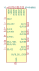
5P49V6965 | Description: Programmable Clock Generator, I2C interface, 1kHz-350MHz, QFN-24
Keys: Low-noise PLL Reference Clock
Datasheet: https://www.idt.com/document/dst/5p49v6965-datasheet |
ABLNO | Description: LVCMOS Ultra Low Phase Noise XO / VCXO, Abracon ABLNO
Keys: XO VCXO
Datasheet: https://abracon.com/Precisiontiming/ABLNO.pdf |
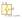
ACO-xxxMHz | Description: HCMOS Crystal Clock Oscillator, DIP14-style metal package
Keys: Crystal Clock Oscillator
Datasheet: http://www.conwin.com/datasheets/cx/cx030.pdf |
ACO-xxxMHz-A | Description: HCMOS Crystal Clock Oscillator, DIP14-style metal package
Keys: Crystal Clock Oscillator
Datasheet: http://www.conwin.com/datasheets/cx/cx030.pdf |
ASCO | Description: Crystal Clock Oscillator, Abracon ASCO
Keys: Crystal Clock Oscillator
Datasheet: https://abracon.com/Oscillators/ASCO.pdf |
ASDMB-xxxMHz | Description: 1.8-3.3V SMD Ultra Miniature Crystal Clock Oscillator, Abracon
Keys: 1.8-3.3V SMD Ultra Miniature Crystal Clock Oscillator
Datasheet: https://abracon.com/Oscillators/ASDMB.pdf |
ASE-xxxMHz | Description: 3.3V CMOS SMD Crystal Clock Oscillator, Abracon
Keys: 3.3V CMOS SMD Crystal Clock Oscillator
Datasheet: http://www.abracon.com/Oscillators/ASV.pdf |
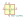
ASV-xxxMHz | Description: 3.3V HCMOS SMD Crystal Clock Oscillator, Abracon
Keys: 3.3V HCMOS SMD Crystal Clock Oscillator
Datasheet: http://www.abracon.com/Oscillators/ASV.pdf |
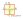
CXO_DIP14 | Description: Crystal Clock Oscillator, DIP14-style metal package
Keys: Crystal Clock Oscillator
Datasheet: http://cdn-reichelt.de/documents/datenblatt/B400/OSZI.pdf |
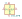
CXO_DIP8 | Description: Crystal Clock Oscillator, DIP8-style metal package
Keys: Crystal Clock Oscillator
Datasheet: http://cdn-reichelt.de/documents/datenblatt/B400/OSZI.pdf |
DFA-S11 | Description: Temperature compensated Crystal Clock Oscillator
Keys: Temperature compensated Crystal Clock Oscillator
Datasheet: http://www.metatech.com.hk/product/fordahl/pdf/2002%20TCXO%20Page%2043-58.pdf |
DFA-S15 | Description: Temperature compensated Crystal Clock Oscillator
Keys: Temperature compensated Crystal Clock Oscillator
Datasheet: http://www.metatech.com.hk/product/fordahl/pdf/2002%20TCXO%20Page%2043-58.pdf |
DFA-S2 | Description: Temperature compensated Crystal Clock Oscillator
Keys: Temperature compensated Crystal Clock Oscillator
Datasheet: http://www.metatech.com.hk/product/fordahl/pdf/2002%20TCXO%20Page%2043-58.pdf |
DFA-S3 | Description: Temperature compensated Crystal Clock Oscillator
Keys: Temperature compensated Crystal Clock Oscillator
Datasheet: http://www.metatech.com.hk/product/fordahl/pdf/2002%20TCXO%20Page%2043-58.pdf |
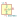
DGOF5S3 | Description: HCMOS Crystal Clock Oscillator, DIP14-style metal package
Keys: Crystal Clock Oscillator
Datasheet: http://www.conwin.com/datasheets/cx/cx030.pdf |
ECS-2520MV-xxx-xx | Description: HCMOS Crystal Clock Oscillator, 2.5x2.0 mm SMD
Keys: Crystal Clock Oscillator ECS SMD
Datasheet: https://www.ecsxtal.com/store/pdf/ECS-2520MV.pdf |
FT5HN | Description: HCMOS temperature compensated oscillator
Keys: TXCO
Datasheet: https://foxonline.com/wp-content/uploads/pdfs/T5HN_T5HV.pdf |
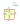
FT5HV | Description: HCMOS temperature compensated voltage controlled oscillator
Keys: TXCO VCTCXO
Datasheet: https://foxonline.com/wp-content/uploads/pdfs/T5HN_T5HV.pdf |
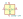
GTXO-14T | Description: Crystal Clock Oscillator, DIP14-style metal package
Keys: Crystal Clock Oscillator
Datasheet: http://www.golledge.com/pdf/products/tcxos/gtxo14.pdf |
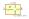
GTXO-14V | Description: Voltage-Controlled Crystal Clock Oscillator, DIP14-style metal package
Keys: Crystal Clock Oscillator
Datasheet: http://www.golledge.com/pdf/products/tcxos/gtxo14.pdf |
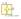
GTXO-S14T | Description: 3.3 & 5V Stratum 3 Sinewave TCXO, DIP14-style metal package
Keys: Crystal Clock Oscillator
Datasheet: http://www.golledge.com/pdf/products/tcxos/gtxos14.pdf |
GTXO-S14V | Description: 3.3 & 5V Stratum 3 Sinewave TCXO, DIP14-style metal package
Keys: Crystal Clock Oscillator
Datasheet: http://www.golledge.com/pdf/products/tcxos/gtxos14.pdf |
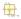
IQXO-70 | Description: Crystal Clock Oscillator, SMD package 7.5x5.0mm
Keys: Crystal Clock Oscillator
Datasheet: http://www.iqdfrequencyproducts.com/products/details/iqxo-70-11-30.pdf |
JTOS-25 | Description: Voltage Controlled Oscillator, 12.5 to 25 MHz, Mini-Circuits BK377
Keys: VCXO
Datasheet: https://www.minicircuits.com/pdfs/JTOS-25+.pdf |
JTOS-50 | Description: Voltage Controlled Oscillator, 25 to 47 MHz, Mini-Circuits BK377
Keys: VCXO
Datasheet: https://www.minicircuits.com/pdfs/JTOS-50+.pdf |
KC2520Z | Description: 1.8432MHz ~ 125MHz Crystal Oscillator
Keys: xo
Datasheet: https://global.kyocera.com/prdct/electro/product/pdf/clock_z_xz_e.pdf |
KT2520K-T | Description: 10-60MHz Temperature Compensated Crystal Oscillator, Kyocera 2520
Keys: tcxo
Datasheet: https://global.kyocera.com/prdct/electro/product/pdf/kt2520_e.pdf |
LTC6905xS5-100 | Description: 2.7-5.5V 100MHz Precision Fixed Frequency Silicon Oscillator, TSOT-23-5
Keys: oscillator fixed frequency divider silicon
Datasheet: https://www.analog.com/media/en/technical-documentation/data-sheets/6905xfa.pdf |
LTC6905xS5-133 | Description: 2.7-5.5V 133MHz Precision Fixed Frequency Silicon Oscillator, TSOT-23-5
Keys: oscillator fixed frequency divider silicon
Datasheet: https://www.analog.com/media/en/technical-documentation/data-sheets/6905xfa.pdf |
LTC6905xS5-80 | Description: 2.7-5.5V 80MHz Precision Fixed Frequency Silicon Oscillator, TSOT-23-5
Keys: oscillator fixed frequency divider silicon
Datasheet: https://www.analog.com/media/en/technical-documentation/data-sheets/6905xfa.pdf |
LTC6905xS5-96 | Description: 2.7-5.5V 96MHz Precision Fixed Frequency Silicon Oscillator, TSOT-23-5
Keys: oscillator fixed frequency divider silicon
Datasheet: https://www.analog.com/media/en/technical-documentation/data-sheets/6905xfa.pdf |
MAX7375AXR105 | Description: Silicon Clock Oscillator 1MHz, SC-70-3
Keys: Silicon Clock Oscillator 1MHz 1000kHz
Datasheet: https://datasheets.maximintegrated.com/en/ds/MAX7375.pdf |
MAX7375AXR185 | Description: Silicon Clock Oscillator 1.84MHz, SC-70-3
Keys: Silicon Clock Oscillator 1,84MHz 1840kHz
Datasheet: https://datasheets.maximintegrated.com/en/ds/MAX7375.pdf |
MAX7375AXR365 | Description: Silicon Clock Oscillator 3.58MHz, SC-70-3
Keys: Silicon Clock Oscillator 3.58MHz 3580kHz
Datasheet: https://datasheets.maximintegrated.com/en/ds/MAX7375.pdf |
MAX7375AXR375 | Description: Silicon Clock Oscillator 3.69MHz, SC-70-3
Keys: Silicon Clock Oscillator 3.69MHz 3690kHz
Datasheet: https://datasheets.maximintegrated.com/en/ds/MAX7375.pdf |
MAX7375AXR405 | Description: Silicon Clock Oscillator 4MHz, SC-70-3
Keys: Silicon Clock Oscillator 4MHz 4000kHz
Datasheet: https://datasheets.maximintegrated.com/en/ds/MAX7375.pdf |
MAX7375AXR425 | Description: Silicon Clock Oscillator 4.19MHz, SC-70-3
Keys: Silicon Clock Oscillator 4.19MHz 4190kHz
Datasheet: https://datasheets.maximintegrated.com/en/ds/MAX7375.pdf |
MAX7375AXR805 | Description: Silicon Clock Oscillator 8MHz, SC-70-3
Keys: Silicon Clock Oscillator 8MHz 8000kHz
Datasheet: https://datasheets.maximintegrated.com/en/ds/MAX7375.pdf |
MV267 | Description: 5/10 MHz Low Phase-Noise Precision OCXO, Morion MV267
Keys: OCXO
Datasheet: http://www.morion.com.ru/catalog_pdf/MV267.pdf |
MV317 | Description: 60, 80, 100, 120 & 122.76 MHz OCXO, Morion MV317
Keys: OCXO
Datasheet: https://www.morion-us.com/catalog_pdf/mv317.pdf |
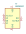
NB3N502 | Description: 3.3V / 5.0V 14 MHz to 190 MHz PLL Clock Multiplier, SOIC-8
Keys: oscillator clock multiplier PLL
Datasheet: http://www.onsemi.com/pub/Collateral/NB3N502-D.PDF |
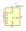
NB3N511 | Description: 3.3V / 5.0V 14 MHz to 200 MHz PLL Clock Multiplier, SOIC-8
Keys: oscillator clock multiplier PLL
Datasheet: http://www.onsemi.com/pub/Collateral/NB3N511-D.PDF |
OCXO-14 | Description: Voltage-Controlled Crystal Clock Oscillator, DIP14-style metal package
Keys: Crystal Clock Oscillator
Datasheet: http://www.petermann-technik.de/fileadmin/petermann/pdf/crystal-oscillators/OCXO-14_PETERMANN-TECHNIK.pdf |
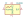
OH300 | Description: 100MHz Sinewave output OCXO, low phase-noise, high stability, Connor-Winfield OH300
Keys: OCXO
Datasheet: http://www.conwin.com/datasheets/cx/cx282.pdf |
SG-210SCD | Description: Crystal Oscillator Low Profile / High Stability SPXO
Keys: Crystal Clock Oscillator
Datasheet: https://support.epson.biz/td/api/doc_check.php?mode=dl&lang=en&Parts=SG-210SED |
SG-210SDD | Description: Crystal Oscillator Low Profile / High Stability SPXO
Keys: Crystal Clock Oscillator
Datasheet: https://support.epson.biz/td/api/doc_check.php?mode=dl&lang=en&Parts=SG-210SED |
SG-210SED | Description: Crystal Oscillator Low Profile / High Stability SPXO
Keys: Crystal Clock Oscillator
Datasheet: https://support.epson.biz/td/api/doc_check.php?mode=dl&lang=en&Parts=SG-210SED |
SG-210STF | Description: CMOS Crystal Oscillator SPXO
Keys: Crystal Clock Oscillator
Datasheet: https://support.epson.biz/td/api/doc_check.php?mode=dl&lang=en&Parts=SG-210STF |
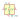
SG-211 | Description: CMOS Crystal Oscillator SPXO
Keys: Crystal Clock Oscillator
Datasheet: https://support.epson.biz/td/api/doc_check.php?mode=dl&lang=en&Parts=SG-211SEE |
SG-3030CM | Description: 32.768kHz Crystal Oscillator (SPXO)
Keys: Crystal Clock Oscillator
Datasheet: https://support.epson.biz/td/api/doc_check.php?mode=dl&lang=en&Parts=SG-3030CM |
SG-5032CAN | Description: CMOS Clock Oscillator 1 to 75 MHz
Keys: Crystal Clock Oscillator
Datasheet: https://support.epson.biz/td/api/doc_check.php?dl=brief_SG5032CAN&lang=en |
SG-5032CBN | Description: CMOS Clock Oscillator 80 to 170 MHz
Keys: Crystal Clock Oscillator
Datasheet: https://support.epson.biz/td/api/doc_check.php?dl=brief_SG5032CBN&lang=en |
SG-5032CCN | Description: CMOS Clock Oscillator 2.5 to 50 MHz
Keys: Crystal Clock Oscillator
Datasheet: https://support.epson.biz/td/api/doc_check.php?dl=brief_SG5032CCN&lang=en |
SG-51 | Description: CMOS Crystal Clock Oscillator, DIP14-style plastic package
Keys: Crystal Clock Oscillator
Datasheet: https://support.epson.biz/td/api/doc_check.php?mode=dl&lang=en&Parts=SG-51P |
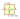
SG-531 | Description: CMOS Crystal Clock Oscillator, DIP8-style plastic package
Keys: Crystal Clock Oscillator
Datasheet: https://support.epson.biz/td/api/doc_check.php?mode=dl&lang=en&Parts=SG-51P |
SG-615 | Description: CMOS Clock Oscillator
Keys: Crystal Clock Oscillator
Datasheet: https://support.epson.biz/td/api/doc_check.php?mode=dl&lang=en&Parts=SG-51P |
SG-7050CAN | Description: CMOS Clock Oscillator 1 to 75 MHz
Keys: Crystal Clock Oscillator
Datasheet: https://support.epson.biz/td/api/doc_check.php?dl=brief_SG7050CAN&lang=en |
SG-7050CBN | Description: CMOS Clock Oscillator 80 to 170 MHz
Keys: Crystal Clock Oscillator
Datasheet: https://support.epson.biz/td/api/doc_check.php?dl=brief_SG7050CBN&lang=en |
SG-7050CCN | Description: CMOS Clock Oscillator 2.5 to 50 MHz
Keys: Crystal Clock Oscillator
Datasheet: https://support.epson.biz/td/api/doc_check.php?dl=brief_SG7050CAN&lang=en |
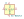
SG-8002CA | Description: CMOS Clock Oscillator 1 to 125 MHz
Keys: Crystal Clock Oscillator
Datasheet: https://support.epson.biz/td/api/doc_check.php?mode=dl&lang=en&Parts=SG-8002DC |
SG-8002CE | Description: CMOS Clock Oscillator
Keys: Crystal Clock Oscillator
Datasheet: https://support.epson.biz/td/api/doc_check.php?mode=dl&lang=en&Parts=SG-8002DC |
SG-8002DB | Description: Crystal Clock Oscillator, DIP14-style plastic package
Keys: Crystal Clock Oscillator
Datasheet: https://support.epson.biz/td/api/doc_check.php?dl=brief_SG-8002DB&lang=en |
SG-8002DC | Description: Crystal Clock Oscillator, DIP8-style plastic package
Keys: Crystal Clock Oscillator
Datasheet: https://support.epson.biz/td/api/doc_check.php?mode=dl&lang=en&Parts=SG-8002DC |
SG-8002JA | Description: CMOS Clock Oscillator
Keys: Crystal Clock Oscillator
Datasheet: https://support.epson.biz/td/api/doc_check.php?mode=dl&lang=en&Parts=SG-8002DC |
SG-8002JC | Description: CMOS Clock Oscillator
Keys: Crystal Clock Oscillator
Datasheet: https://support.epson.biz/td/api/doc_check.php?mode=dl&lang=en&Parts=SG-8002DC |
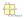
SG-8002LB | Description: CMOS Clock Oscillator 1 to 125 MHz
Keys: Crystal Clock Oscillator
Datasheet: https://support.epson.biz/td/api/doc_check.php?dl=brief_SG-8002LB&lang=en |
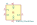
Si512A_2.5x3.2mm | Description: Dual frequency crystal oscillator (XO) 100 kHz to 250 MHz, Single-ended CMOS output
Keys: Dual frequency crystal oscillator
Datasheet: https://www.silabs.com/documents/public/data-sheets/si512-13.pdf |
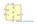
Si513A_2.5x3.2mm | Description: Dual frequency crystal oscillator (XO) 100 kHz to 250 MHz, Single-ended CMOS output
Keys: Dual frequency crystal oscillator
Datasheet: https://www.silabs.com/documents/public/data-sheets/si512-13.pdf |
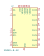
Si5351A-B-GM | Description: I2C Programmable Any-Frequency CMOS Clock Generator, QFN-20
Keys: CMOS Synth Oscillator I2C
Datasheet: https://www.silabs.com/documents/public/data-sheets/Si5351-B.pdf |
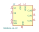
Si5351A-B-GT | Description: I2C Programmable Any-Frequency CMOS Clock Generator, MSOP-8
Keys: CMOS Synth Oscillator I2C
Datasheet: https://www.silabs.com/documents/public/data-sheets/Si5351-B.pdf |
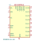
Si5351B-B-GM | Description: I2C Programmable Any-Frequency CMOS Clock Generator + VCXO, QFN-20
Keys: CMOS Synth Oscillator I2C VCXO
Datasheet: https://www.silabs.com/documents/public/data-sheets/Si5351-B.pdf |
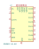
Si5351C-B-GM | Description: I2C Programmable Any-Frequency CMOS Clock Generator, QFN-20
Keys: CMOS Synth Oscillator I2C
Datasheet: https://www.silabs.com/documents/public/data-sheets/Si5351-B.pdf |
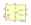
Si570 | Description: 10 MHZ TO 1.4 GHZ I2C PROGRAMMABLE XO/VCXO
Keys: 10 MHZ TO 1.4 GHZ I2C PROGRAMMABLE XO/VCXO
Datasheet: http://www.silabs.com/Support%20Documents/TechnicalDocs/si570.pdf |
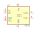
Si571 | Description: 10 MHZ TO 1.4 GHZ I2C PROGRAMMABLE XO/VCXO
Keys: 10 MHZ TO 1.4 GHZ I2C PROGRAMMABLE XO/VCXO
Datasheet: http://www.silabs.com/Support%20Documents/TechnicalDocs/si570.pdf |
TCXO-14 | Description: Temperature Compensated Crystal Clock Oscillator, DIP14-style metal package
Keys: Crystal Clock Oscillator
Datasheet: http://www.golledge.com/pdf/products/tcxos/gtxos14.pdf |
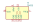
TCXO3 | Description: Temperature compensated crystal oscillator
Keys: Temperature compensated crystal oscillator
Datasheet: http://www.hcelectronics.cz/PDF/TCXO3_A.pdf |
TFT660 | Description: Crystal Clock Oscillator, DIP8-style metal package
Keys: Crystal Clock Oscillator
Datasheet: http://cdn-reichelt.de/documents/datenblatt/B400/OSZI.pdf |
TFT680 | Description: Crystal Clock Oscillator, DIP14-style metal package
Keys: Crystal Clock Oscillator
Datasheet: http://cdn-reichelt.de/documents/datenblatt/B400/OSZI.pdf |
TXC-7C | Description: CMOS SMD Crystal Clock Oscillator, TXC
Keys: CMOS SMD Crystal Clock Oscillator
Datasheet: http://www.txccorp.com/download/products/osc/7C_o.pdf |
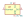
VC-81 | Description: Voltage-Controlled Crystal Clock Oscillator, DIP8-style metal package
Keys: Crystal Clock Oscillator
Datasheet: http://www.scsiglobal.com/Hosonic/Documents/SCSI-VC-81&83.pdf |
VC-83 | Description: Voltage-Controlled Crystal Clock Oscillator, DIP8-style metal package
Keys: Crystal Clock Oscillator
Datasheet: http://www.scsiglobal.com/Hosonic/Documents/SCSI-VC-81&83.pdf |
VTCXO-14 | Description: Voltage-Controlled Crystal Clock Oscillator, DIP14-style metal package
Keys: Crystal Clock Oscillator
Datasheet: http://www.golledge.com/pdf/products/tcxos/gtxos14.pdf |
XO32 | Description: HCMOS Clock Oscillator
Keys: Crystal Clock Oscillator
Datasheet: http://cdn-reichelt.de/documents/datenblatt/B400/XO32.pdf |
XO53 | Description: Low Power Consumption Clock Oscillator
Keys: Crystal Clock Oscillator
Datasheet: http://cdn-reichelt.de/documents/datenblatt/B400/XO53.pdf |
XO91 | Description: HCMOS Clock Oscillator
Keys: Crystal Clock Oscillator
Datasheet: http://cdn-reichelt.de/documents/datenblatt/B400/XO91.pdf |
XUX51 | Description: Low phase noise, quartz-based PLL oscillator, 0.016-1500 MHz, complementary output
Keys: OTP XHCMOS 1.8V VCXO
Datasheet: https://www.idt.com/document/dst/xu-family-datasheet |
XUX52 | Description: Low phase noise, quartz-based PLL oscillator, 0.016-1500 MHz, complementary output
Keys: OTP XHCMOS 2.5V VCXO
Datasheet: https://www.idt.com/document/dst/xu-family-datasheet |
XUX53 | Description: Low phase noise, quartz-based PLL oscillator, 0.016-1500 MHz, complementary output
Keys: OTP XHCMOS 3.3V VCXO
Datasheet: https://www.idt.com/document/dst/xu-family-datasheet |
XUX71 | Description: Low phase noise, quartz-based PLL oscillator, 0.016-1500 MHz, complementary output
Keys: OTP XHCMOS 1.8V VCXO
Datasheet: https://www.idt.com/document/dst/xu-family-datasheet |
XUX72 | Description: Low phase noise, quartz-based PLL oscillator, 0.016-1500 MHz, complementary output
Keys: OTP XHCMOS 2.5V VCXO
Datasheet: https://www.idt.com/document/dst/xu-family-datasheet |
XUX73 | Description: Low phase noise, quartz-based PLL oscillator, 0.016-1500 MHz, complementary output
Keys: OTP XHCMOS 3.3V VCXO
Datasheet: https://www.idt.com/document/dst/xu-family-datasheet |
XUY51 | Description: Low phase noise, quartz-based PLL oscillator, 0.016-1500 MHz, complementary output
Keys: OTP HCMOS 1.8V VCXO
Datasheet: https://www.idt.com/document/dst/xu-family-datasheet |
XUY52 | Description: Low phase noise, quartz-based PLL oscillator, 0.016-1500 MHz, complementary output
Keys: OTP XHCMOS 2.5V VCXO
Datasheet: https://www.idt.com/document/dst/xu-family-datasheet |
XUY53 | Description: Low phase noise, quartz-based PLL oscillator, 0.016-1500 MHz, complementary output
Keys: OTP XHCMOS 3.3V VCXO
Datasheet: https://www.idt.com/document/dst/xu-family-datasheet |
XUY71 | Description: Low phase noise, quartz-based PLL oscillator, 0.016-1500 MHz, complementary output
Keys: OTP HCMOS 1.8V VCXO
Datasheet: https://www.idt.com/document/dst/xu-family-datasheet |
XUY72 | Description: Low phase noise, quartz-based PLL oscillator, 0.016-1500 MHz, complementary output
Keys: OTP XHCMOS 2.5V VCXO
Datasheet: https://www.idt.com/document/dst/xu-family-datasheet |
XUY73 | Description: Low phase noise, quartz-based PLL oscillator, 0.016-1500 MHz, complementary output
Keys: OTP XHCMOS 3.3V VCXO
Datasheet: https://www.idt.com/document/dst/xu-family-datasheet |